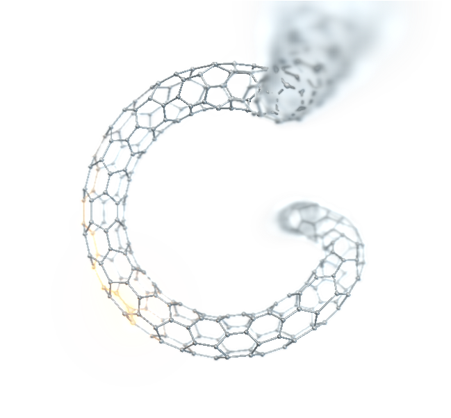
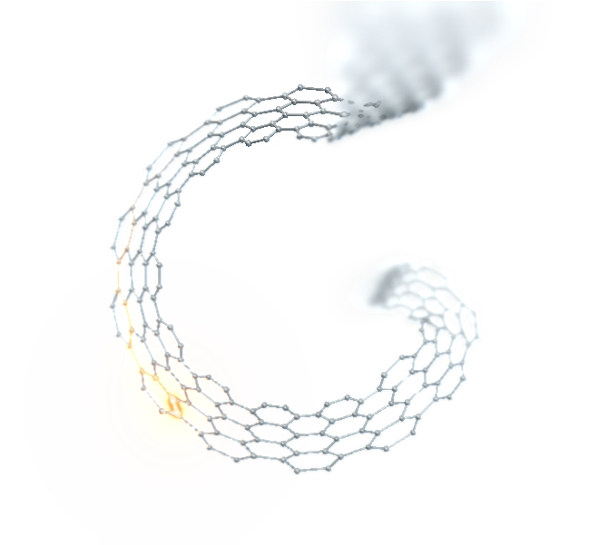

G SHAPE STUDY
Two forms. One perspective.
Compare the fuller lattice with the thin ribbon. Both share the round G, real camera depth and endless forward motion.
A
View in the site Fuller lattice

Static preview
A rounded cross-section gives the metal lattice more volume and changing reflections.
B
View in the site Thin ribbon

Static preview
An open sheet keeps the silhouette lighter and makes individual bonds easier to see.